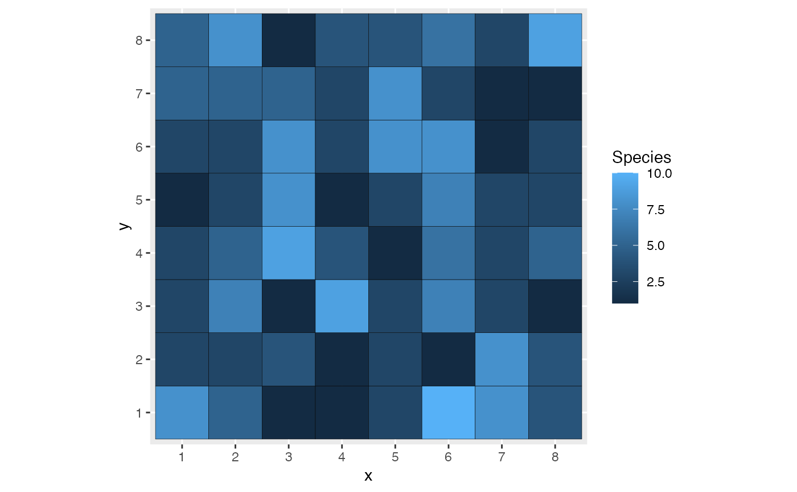

The entropart package provides generic methods to measure diversity.
S3 methods to aplly them to simulated communities are available here.
AbdVector returns an abundance vector and ProbaVector returns a probability vector.
Tsallis returns Tsallis's entropy of a community, Diversity its diversity.
Richness, Shannon and Simpson return particular indices of diversity.
# S3 method for pattern_matrix_individuals as.AbdVector(x, ...) # S3 method for pattern_matrix_individuals as.ProbaVector(x, ...) # S3 method for pattern_matrix_individuals Tsallis(NorP, q = 1, Correction = "Best", ..., CheckArguments = TRUE) # S3 method for pattern_matrix_individuals Diversity(NorP, q = 1, Correction = "Best", ..., CheckArguments = TRUE) # S3 method for pattern_matrix_individuals Richness( NorP, Correction = "Chao1", Alpha = 0.05, JackOver = FALSE, ..., CheckArguments = TRUE ) # S3 method for pattern_matrix_individuals Shannon(NorP, Correction = "Best", ..., CheckArguments = TRUE) # S3 method for pattern_matrix_individuals Simpson(NorP, Correction = "Lande", ..., CheckArguments = TRUE)
| x | An object of class |
|---|---|
| ... | Further arguments. Unsused. |
| NorP | An object of class "wmppp" ( |
| q | A number: the order of entropy. Some corrections allow only a positive number. Default is 1 for Shannon entropy. |
| Correction | A string containing one of the possible corrections: |
| CheckArguments | If |
| Alpha | The risk level, 5% by default, used to optimize the jackknife order. |
| JackOver | If |
# A community matrix drift model myModel <- cm_drift$new(pattern_matrix_individuals(S=10)) myModel$autoplot()as.AbdVector(myModel$pattern)#> 1 2 3 5 7 8 10 #> 1 11 1 21 13 4 13 #> attr(,"class") #> [1] "AbdVector" "SpeciesDistribution" "array"as.ProbaVector(myModel$pattern)#> 1 2 3 5 7 8 10 #> 0.015625 0.171875 0.015625 0.328125 0.203125 0.062500 0.203125 #> attr(,"class") #> [1] "ProbaVector" "SpeciesDistribution" "array"Tsallis(myModel$pattern)#> UnveilJ #> 1.722157Diversity(myModel$pattern)#> UnveilJ #> 5.596585Richness(myModel$pattern)#> Chao1 #> 7.984375Shannon(myModel$pattern)#> UnveilJ #> 1.722157Simpson(myModel$pattern)#> Lande #> 0.7881944